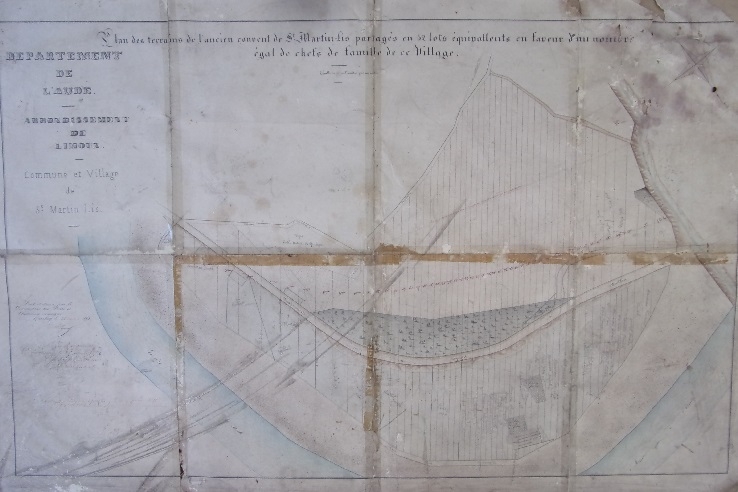
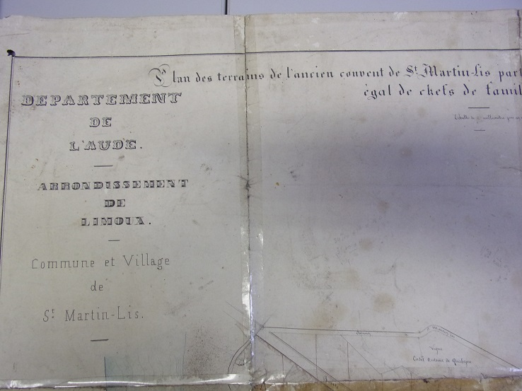
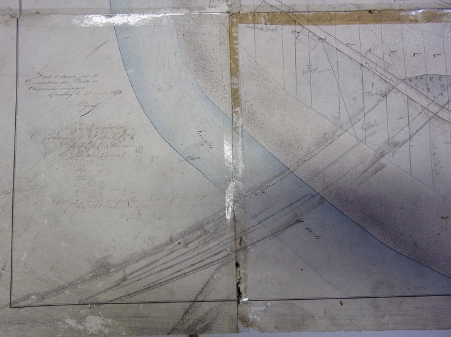
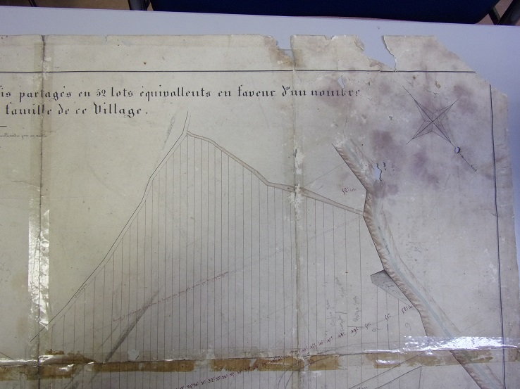
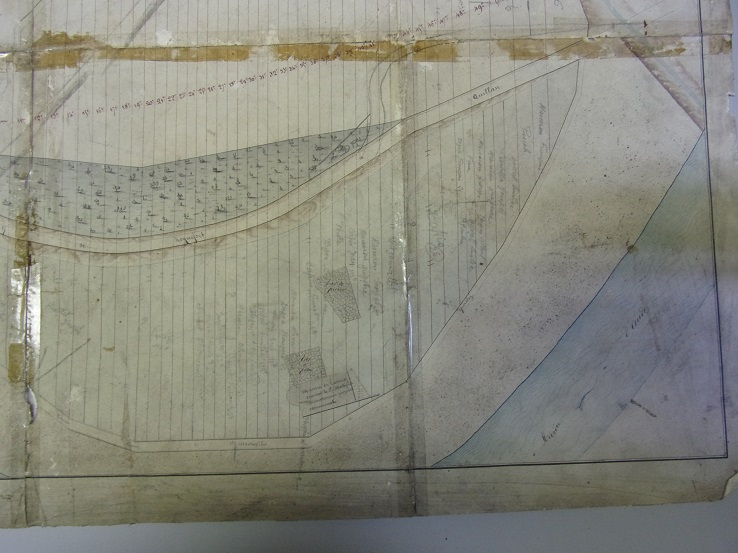

Au XIXes les ruines de l'abbaye étaient encore imposantes, comme le montre la gravure de Melling de 1826, même si ses gravures gardent généralement une touche de fantaisie.
2 auteurs - l'abbé J.T. Lasserre et Louis Fédié ont fait une description sommaire de l'état du site qu'ils ont pu constater un peu plus tard (vers le dernier tiers du XIXes), leur descriptif étant non daté il est difficile de le situer en rapport au sujet principal de cette page.
Mais aujourd'hui, comme le montrent les photos de l'état actuel, il ne reste quasiment plus rien.
La principale cause de la disparition de ces ruines n'est pas due à la construction de la voie ferrée, contrairement à ce que suppose Ernest Cross dans les propos que lui prête l'abbé M Mazières2,
mais plutôt au partage de terrains entre les habitants de St Martin en 1854.
En 1850, une grande friche occupe toute la rive gauche de l'Aude en aval du village, friche que personne n'a trop osé toucher jusque là, car elle regorge de ruines, celles de l'ancien Monastère de St Martin Lys. Est-ce le caractère sacré ( ou maudit ) attaché à ces ruines qui les a préservées jusque là ? En tout cas ces terrains, potentiellement les plus fertiles de la vallée, sont à l'abandon.
Cette année là (6 janvier), les propriétaires de ces terrains de l'ancien couvent tentèrent de les vendre à la commune de St Martin
L'histoire de cet achat peut être reconstitué à partir du détail des délibérations de conseil municipal de ces années 1850 - 1854 qui sont retranscrites dans le registre des affaires communales
Ces terrains sont les 4 parcelles portées sur le cadastres de 1833 avec les n° 94, 95, 96 et 97, d'une contenance totale de 4 ha 24 a 36 c, appartenant à Marguerite Bals, apportés en dot lors de son mariage avec Jean Batiste Roch Ferrié, proposés pour un total de 4000 francs à la commune (réduits ultérieurement à 3000 francs...), somme dérisoire par rapport à la qualité du terrain en question, qui ne peut s'expliquer que par la superstition qui empêche d'en tirer un meilleur profit).
La commune, unanime, a donné son accord pour cet achat qui ne pouvait être que profitable car la somme demandée correspondait à la vente d'un terrain que la commune possédait en montagne mais d'une superficie plus petite et tellement moins pratique (Achetés par 2 habitants du village dont l'adjoint au maire Amboise Ganet pour faciliter l'acquisition du couvent, cette "affaire" tournera d'ailleurs au cauchemar).
Mais comme rien n'est simple avec l'administration française, cette vente va être refusée par 2 fois par le ministère de l'intérieur (réponse du 17 novenbre 1850 au premier refus et du 04 février 1851 au deuxième refus)
(personnellement je ne peux pas comprendre que la préfecture n'ait pas soutenu plus efficacement les martinlysois dans leur demande alors que cette même préfecture a accepté rapidement que la commune vende le bien qui lui permettait d'obtenir les 4000 francs nécessaires - refus au risque de faire capoter la vente suite à ces délais imposés par toutes ces démarches - on peut voir là toute la complexité administrative imposée à "la commune la plus pauvre de France" : une enquête d'utilité publique "commodo et incommodo" menée par le maire de Belvianes, puis une demande d'accord à faire auprès du Ministre de l'intérieur qui ne connaît bien-sûr rien de la situation locale et qui ne tient pas compte de l'avis de son Sous-Préfet de Limoux, ni de celui de son Préfet de l'Aude)
En novembre 1851, comme la vente du bois que la commune a réalisée dans le but d'acheter ce terrain ne rapportera finalement que 3000 francs, les propriétaires du couvent décident de baisser leur prix eux aussi à 3000 francs.
Changement qui bien-sûr exige une nouvelle confirmation préfectorale
En mai 1852, la commune de St Martin Lys est enfin propriétaire du terrain, c'est alors qu'est décidé de partager cette grande friche, dite des "terrains de l'ancien couvent" plutôt d'en faire un usage commun. (les membres du conseil municipal proposent que seuls les frais du géomètre délimitant les terrains seraient à la charge des "copartageants")
La demande est renouvelée en décembre 1852, un terrain pour chacun des 52 chefs de famille. Le Conseil municipal renouvelle son souhait d'en faire don, car beaucoup de familles sont trop pauvres pour payer l'achat de cette terre (la totalité du terrain est évalué au prix d'achat de 3000 francs, soit 57,7 F par famille). Mais la commune se doit de faire valider sa proposition par la sous préfecture de Limoux. Et c'est là qu'on part à nouveau dans les méandres des démarches administratives : (courriers échangés avec la commune, disponibles aux archives départementales de l'Aude1)
Mais ce n'est pas pour autant terminé...
Avant ces 2 dernières étapes, une pétition est transmise par des chefs de famille qui se sentent floués, considérant que les parts n'étaient pas équitables. La réponse du conducteur des travaux Ponts et chaussées est sans appel : les terrains contestés n'auraient volontairement pas été défrichés pour faire ressortir un déséquilibre par rapport à ceux qui ont commencé à être travaillé, pour donner l'illusion du moindre rapport de ces champs.
Personnellement je veux bien croire que le partage n'a pas été du tout équitable, pour la simple raison que la friche cachait certaines particularités du terrain. Quand on tombe sur le cimetière (comme semble l'indiquer Louis Fédié) avec dans les tombes des objets collectors en plus des os des moines, le terrain n'a pas la même valeur que quand il y a les restes d'un mur de clôture ou rien d'autre que du sable.
La version de 1854 du plan de partage dressé par Monsieur Viguier se trouve toujours à la mairie de St Martin, retrouvée par Gérard Gosselin dans les archives. Ce plan est sur une feuille format A1 un peu abîmée et a été réutilisée pour dessiner au crayon ultérieurement la position des nouvelles maisons et nommer les propriétaires des bandes de terre. Malgré la qualité médiocre de mes photos (que j'espère temporaire), je propose :
    
Une vue générale du plan, puis un découpage en 4 parties et une vue en détail des restes du couvent.
Sur le cadastre d'avant partage, le terrain se présentait ainsi

Détail du cadastre de 1833 (mairie de St martin Lys)
Sur le plan castral actuel, on peut retrouver la trace de ce partage initial

Cadastre des terrains de l'ancien couvent
Le tas de pierres des ruines actuelles est sur le lot 139
La parcelle 106 me semble objet à discussion...
Sur la partie fertile en dessous de la route départementale, On voit encore les fines tranches de terrains transversales qui ont été dessinés par Monsieur Viguier. Celles proches de la route ont dû être réduite par le déplacement de la route et faire l'objet d'expropriation lors de son élargissement et/ou de la construction de la voie ferrée (comme la parcelle 106 tout en haut du plan). La partie des terrains au dessus de la route montre moins les traces du partage, si ce n'est l'axe des terrains.
Les différences de largeurs des bandes de terrain actuelles peuvent s'expliquer soit par :
L'objectif de Monsieur Viguier était d'assurer une valeur du terrain égale entre chacune des parcelles au lieu d'une surface égale. Cet objectif étant très subjectif : il est logique que certains qui ont reçu des parcelles plus petites en surface (ou qui craignaient) se sont sentis défavorisés. La réaction du conducteur des travaux Ponts et chaussées toute excessive qu'elle me paraisse, n'en est pas moins justifiée car il a fait de son mieux pour établir les conditions de ce partage.
Reste que le fait de partager cet espace pour le rendre à la culture agricole, l'a fortement impacté. Les pierres embarrassantes ont été jetées sans discernement sur l'emplacement 139 qui n'avait pas été attribué et le temps a fait le reste pour faire disparaître les parties les plus fragiles après le grand nettoyage de la friche.
Ci-dessous, je vous présente le détail de la plus-part des pièces documentaires qui ont permis d'aboutir à ce partage. Malheureusement au vu du volume, je me suis quelque peu précipité dans mes prises photos et elles sont quasiment toutes trop flou pour être vraiment exploitables. Mais comme elles reflètent l'état d'esprit de l'époque je vous les livre telles que je les ai collectées... (ferait mieux la prochaine fois)

31/12/1852 - Courrier à la préfecture de demande initiale par le maire Siméon Augereau
(fait suite à des échanges dont je n'ai pas trouvé trace au archives municipale, dont l'achat par la commune du terrain)
et préparation de la réponse négative de la Sous préfecture

26/01/1853 - Décision du conseil municipal de vente à prix réduit - prix réduit de moitié (voir aussi le registre des affaire municipales)

01/02/1853 - Courrier du maire à la Sous préfecture,
demandant son accord - préparation de la réponse avec accord de principe
Le 13 février 1853, nouvelle délibération du conseil municipal, noté dans le registre des délibérations municipales essayant de fixer le prix de chaque lot à 10 francs
Le 28 février 1853, encore une nouvelle délibération du conseil municipal, noté dans le registre des délibérations municipales essayant cette fois de partir sur le prix d'achat divisé par 2, à répartir entre les 52 familles - délibération confirmé le 10 avril 1853 (le courrier précédent s'était-il perdu ?)

16/04/1853 - Décision du conseil municipal d'ouvrir la consultation d'utilité publique


10/05/1853 - Rapport de Monsieur Viguier le conducteur des travaux Ponts et chaussées, justifiant le partage
Dommage que ce soit illisible car contient sûrement la description du terrain...


16/05/1853 - Enquête d'utilité publique réalisée par M Doumergue, maire de Belvianes,
avec la signature des 43 chefs de famille qui se sont présentés (pour ceux qui savaient écrire) -
Par exemple mon arrière, arrière, arrière grand-père Mounier n'a pas signé...

29/06/1853 - Délibération du conseil municipal validant la fin du délai d'affichage (2 délibérations ( une troncquée de quelque ligne et une antidatée) apparaissent à cette date dans le registre des affaires communales)


01/07/1853 - Signature pour accord de partage par les 52 chefs de famille

10/07/1853 - Certification par le maire que la procédure a bien été suivie
Monsieur Viguier des pont et chaussée a réalisé en septembre 1853 un plan et produit des documents pour permettre à un partage équitable ce qui a donné lieu à des courriers qui sont mentionnés dans les documents suivants mais que personnellement je n'ai pas vu. Le plan de partage proposé devait ressembler à celui de 1854 présenté plus haut


19/12/1853 - Validation par la Sous Préfecture de l'échange
La page 2 étant illisible, la date indiquée est approximative...
(trop pressé de passer à la suite, une vérification de la qualité aurait pourtant dû s'imposer pour un document aussi important...)


26/02/1854 - procès verbal du partage
avec pour chaque famille, son n° de lot, la surface du terrain obtenu et la valeur du lot (valeur égale pour tous les lots)


03/03/1854 - Contestation par des chefs de familles se sentant lésés auprès de la préfecture
Le préfet demande au sous-préfet d'instruire cette réclamation
Je ne sais pas pourquoi, mais je n'ai pas la réponse de Monsieur Viguier (conducteur de travaux ayant fait le métrage) alors que je l'ai lue sur place... A trouver et rajouter.

18/03/1854 - Validation du plan et du procès verbal du partage par le conseil municipal (voir aussi le registre des affaires municipales)

20/04/1854 - Demande par la sous-préfecture au préfet de valider le partage


25/04/1854 - Validation préfectorale du partage (brouillon ?)
Chaque chef de famille est devenu propriétaire d'une parcelle, mais a une dette à rembourser à la commune, même si son montant est faible et étagé. Mais les récoltes des années à venir ne sont pas suffisantes pour assurer ce remboursement aussi le 10 janvier 1860 le conseil municipal demande aux autorités supérieures le rééchelonnement de la dette : demande d'un délai supplémentaire de 9 mois
1Archives départementales de L'Aude - dossier référence "2 OP 2781"
3Compte-rendu d’une recherche historique à Saint-Martin-Lys, MSASC (Mémoires de la Société des Arts et des Sciences de Carcassonne), 4e série, t. IV, années 1960-1962 par l’abbé Maurice Mazières.